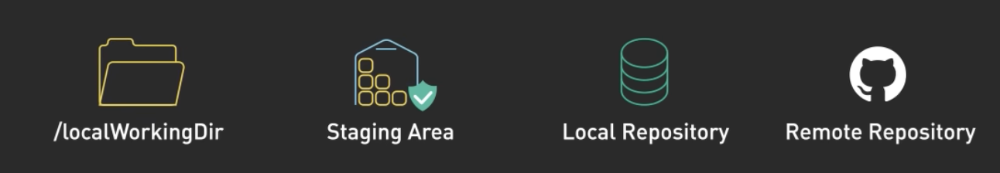

How Git Works
The Four Locations
In Git, your code can exist in four different places. Understanding these locations is key to understanding Git.
Image from this video, which covers more than we'll use in this class.
Let's learn what each of these means.
1. Working Directory
Working Directory
The folder on your computer where you edit files. This is what you see in VS Code.
When you create a new file, edit existing code, or delete something—those changes happen in your Working Directory.
Think of it like your desk where you're actively working on papers.
2. Staging Area
Staging Area
A preparation zone where you choose which changes to include in your next save.
Before saving your work, you decide what to save. The staging area lets you select specific files.
This is the Add step.
Like putting papers into an envelope before mailing them.
3. Local Repository
Local Repository
The saved history of your project, stored on your computer.
When you commit, you save a snapshot of your staged changes. You also write a short message describing what you changed.
This is the Commit step.
Like sealing the envelope and putting it in your outbox.
4. Remote Repository
Remote Repository
Your project stored online (like on GitHub). This is how you share code and back it up.
When you push, you upload your commits to GitHub.
This is the Push step.
Like mailing the envelope so others can receive it.
The Three Steps
Every time you want to save your work to GitHub:
VS Code has buttons for all of this. You'll learn exactly how in the Final Boss level.
Remember: A.C.P.
Add → Commit → Push
A cute puppy to celebrate your progress.
Level Complete
Password: loading...